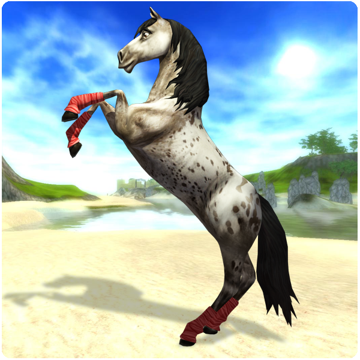
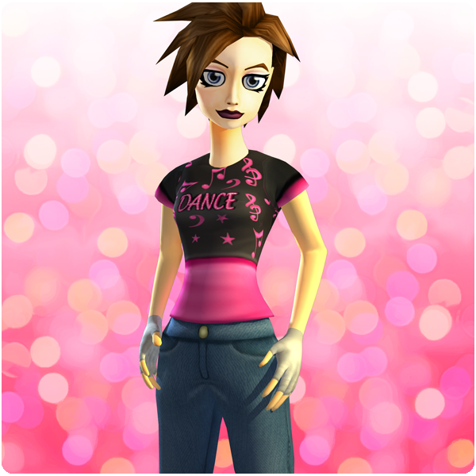

Hello everyone!
Here is this week's update!
New features:
Bareback:
Now you can easily remove the saddle and blanket from your character sheet "Me and my horse" in game and ride bareback! Press "C" on your keyboard to open the sheet. To remove or add saddle or blanket you just drag the saddle icon or blanket icon to your backpack.
Leg Wraps:
Equip your horse with Leg wraps! You can buy these at some of the decoration shops around Jorvik.

New quests:
If you are level 12 there are new exciting quests! Go to Jaspers farm and talk to Alex.
New clothes:
The Star Rider Shop in the Silverglade Village has got some new cool clothes! You can only buy these clothes if you have got a good reputation with the village.
Friday's Disco:
First, we would like to thank everyone who came to the disco at Café Pinta last Friday! It was so much fun! We want to thank everyone who was online by giving you a nice T-shirt.

Best regards: